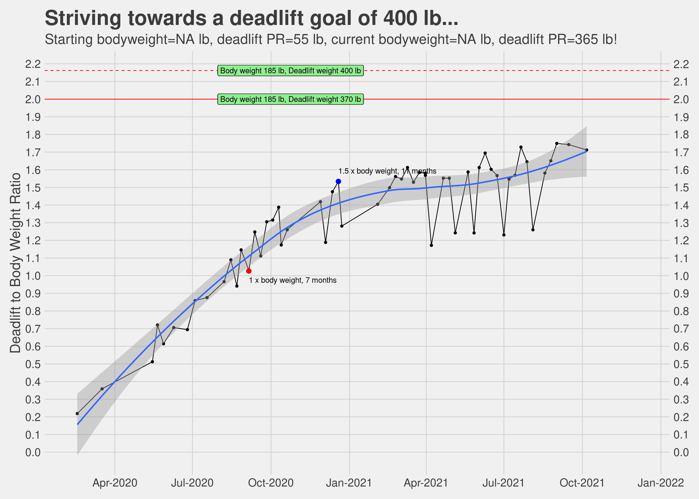
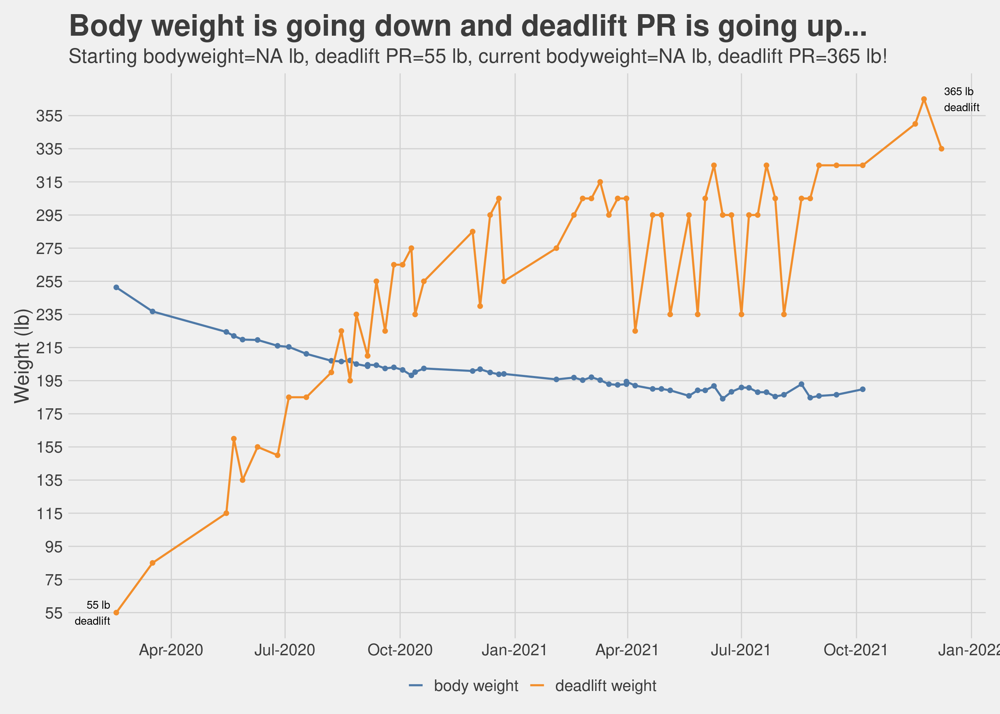

Chapter 5 What did we accomplish?
I have said this earlier in this book, my initial goal for meeting with a trainer and going to the gym was to lose weight, but as we started sweating it out I realized that we were getting a lot more out of this exercise and clean eating regimen than just a lighter body. Even so, weight loss and overall getting the body in a better shape are important goals, so how did we fare on these?
| Important Metrics | ||
|---|---|---|
| Key data points that describe the journey | ||
| Metric | Amit | Nidhi |
| Days since start | 215 | 215 |
| Days taken to lose last 10 pounds | 64 | 140 |
| Starting Weight (lb) | 251.33 | 151.9 |
| Current Weight (lb) | 202.38 | 130.73 |
| Total weight loss (lb) | 48.951 | 21.172 |
| Best Weight loss month | May, 8.38 lb | Mar, 6.18 lb |
| Source: Daily measurements done @home | ||
|
1
19.48% of the starting body weight.
2
13.94% of the starting body weight.
|
||
5.1 Percentages are revealing
So net-net in about 7 months, I lost about 20% of my body weight and Nidhi lost about 15%. Not too bad. In terms of how far we have progressed compared to the goals we started with, I have some more miles to go while Nidhi is almost there.

5.2 Changes in other biometrics
Along with the body weight, other metrics also saw significant change. This is seen in the following charts. BMI is widely used (I suppose accepted as well) measurement to determine if someone is healthy, obese or overweight. We saw reduction in BMI as well which as expected is correlated to the reduction in weight. NIH guidelines for BMI are available here for reference.
All measurements in the charts below were done automatically as part of the daily metrics measured by the scale and synched with our phone. This made it really easy to collect and analyze this data.

5.3 Body measurements
Weight and BMI is not the only metric we tracked, these metrics are often times all we think in terms of measuring but there is more. Just as the proof of the pudding is in the eating, the proof of the weight loss is in the wearing (of clothes). As we kept on making progress in our journey, the clothes started fitting well at first, then getting loose and the finally it reached a point where most of our old clothes were just too big and this necessitated a wardrobe refresh. A happy problem to have.
We tracked this by doing body measurements once every few months. The charts below have a story to tell.

5.4 Of slides and plateaus
Anyone who has embarked on a journey to lose more than say 10 pounds would identify with the fact that the weight loss trajectory is never a linear slide downwards, no matter how determined you are in your desire and dogged in your persuasion. It was the same for us, there were days and weeks which were very good, especially at the start and then their were periods where the weight loss yo-yoed. These periods were disappointing, disheartening even.
It is important to understand, as we discovered, that as we are subjecting the body to a different sort of eating regimen and making more and more demands of it by way of workouts in the gym, the body is also trying to recaliberate its response. It is figuring out how much fat to store as energy reserves, how much to burn to provide the fuel for the exercise. This means that sometimes the weight loss may completely stall or even go in the reverse. The key is to be patient and keep eating clean (relatively speaking) and putting in the hours in the gym without completely burning out.
The chart below shows the week by week distribution of the weight and as you can see there were at least a couple of streaks of plateaued weight loss. We persisted, and ultimately, we prevailed.

5.5 A forecast and a promise
As we were going through this journey, I was very eager to apply some forecasting and determine if we could project a reasonable date when we would be able to meet our weight loss target. As much as this book is not just about weight loss, there is no denying the fact that it was one of the most (if not the most) tangible outcome we were tracking towards.
Once we had collected a reasonable amount of data, I used standard timeseries forecasting techniques to determine how our weights would look say 30, 90 or 180 days from the current date. I used the Prophet package from Facebook AI Research (FAIR) to do the timeseries forecast. The results are presented below. This forecast was done on August 16, 2020 and as per this forecast we should be able to achieve our target weight (128 lb) in early October for Nidhi and mid-December for me (190 lb).
Once we had these forecasted date and the plots created, we started monitoring very closely if our daily weight measurements were within the range of errors as shown in these plots. Some days the weight did creep out of the error limits but then it served as a nice tool to keep us honest, so in a manner of speaking we knew how much we could deviate. So if an Indian takeout dinner one evening did set us back, we knew we had to make up for it in the next few days to come back within acceptable range. So far it seems the projects are holding up reasonably well. If nothing else, it provides certain guard rails to not let one go completely off track. The promise still is, if we keep doing what we have been diligently doing, we should be able to achieve our goals around, if not exactly on, the forecasted date. It is important to mention here, this simple forecast is considering the weight loss as a univariate timeseries i.e. single variable timeseries, we know it is much more complicated than that. The premise is that all exogenous factors remaining the same, this forecast should hold up.

